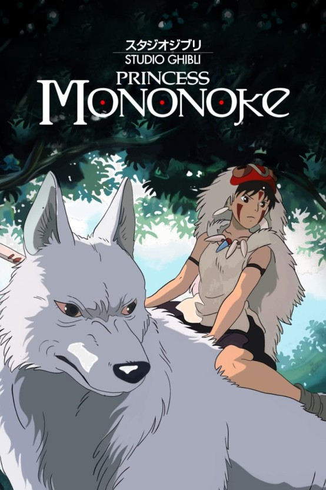
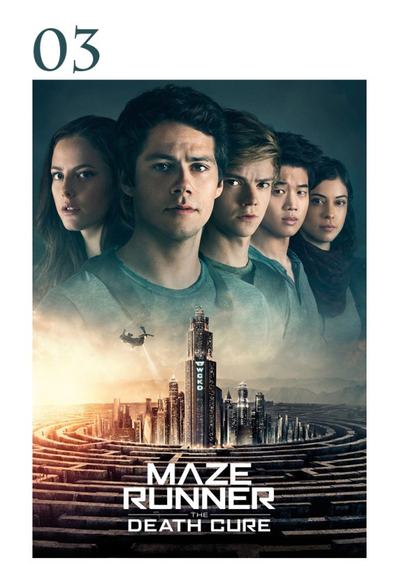
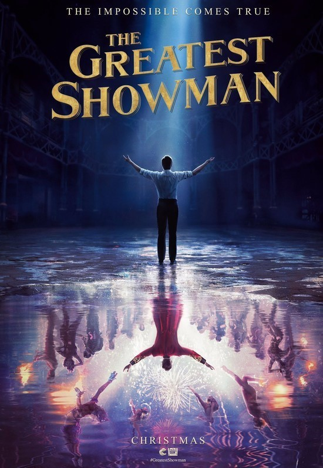

| 순위 |
제목 |
포스터 |
줄거리 |
바로가기 |
| 1 |
이터널 선샤인 |

|
조엘은 아픈 기억만을 지워준다는 라쿠나사를 찾아가 헤어진 연인
클레멘타인의 기억을 지우기로 결심한다. 기억이 사라져 갈수록 조엘은
사랑이 시작되던 순간, 행복한 기억들, 가슴 속에 각인된 추억들을
지우기 싫어지기만 하는데... 당신을 지우면 이 아픔도 사라질까요?
사랑은 그렇게 다시 기억된다.
|
클릭
|
| 2 |
원령공주 |

|
수백년전 야마토 조정과의 싸움에서 패한 후 북쪽 변방에 숨어서
생활하고 있는 에미시 일족. 평화로운 마을 부근의 숲에 어느날 갑자기
타타리가미(재앙신)가 나타난다. 인간에 대한 증오와 원망이 가득찬
타타리가미는 마을로 돌진하고, 에미시의 차기 족장(族長)
아시타카(Ashitaka: 마수다 요지 목소리 분)는 마을을 지키기 위해서
어쩔 수 없이 재앙신에게 활을 날린다....더보기
|
클릭
|
| 3 |
버드박스 |
|
미스터리한 힘으로 전 세계 인구가 급감한 후, 전에 없던 사악한 위협이
점점 더 가까이 다가온다. 흥행작 《버드 박스》의 이야기를 확장해
바르셀로나를 배경으로 펼쳐지는 영화.
|
클릭
|
| 4 |
메이즈 러너 |
 |
삭제된 기억, 거대한 미로로 둘러싸인 낯선 공간 모든 기억이 삭제된 채
의문의 장소로 보내진 ‘토마스’(딜런 오브라이언). ‘토마스’는 미로에
갇힌 그곳에서 자신과 같은 상황의 사람들을 만난다. 그들은 매일 밤
살아 움직이는 미로에서 정체를 알 수 없는 죽음의 존재와 대립하며,
지옥으로부터 빠져나갈 탈출구인 지도를 완성해 나간다. 그러던 어느 날,
미로의 문이 열리고 그들은 마지막 선택의 기로에 놓이게 되는데… 단 한
순간도 예측할 수 없는 그 곳, 과연 그들은 살아남을 수 있을 것인가!
살아 움직이는 미로를 뚫고 탈출에 성공할 수 있을 것인가! 살아 남기
위해서는 뛰어야 한다!
|
클릭
|
| 5 |
위대한 쇼맨 |
 |
쇼 비즈니스의 창시자이자, 꿈의 무대로 전세계를 매료시킨 남자
‘바넘’의 이야기에서 영감을 받아 탄생한 오리지널 뮤지컬 영화 <위대한
쇼맨>. <레미제라블> 이후 다시 뮤지컬 영화로 돌아온 휴 잭맨부터 잭
에프론, 미셸 윌리엄스, 레베카 퍼거슨, 젠다야까지 할리우드 최고의
배우들이 합류해 환상적인 앙상블을 선보인다. 여기에 <미녀와 야수>
제작진과 <라라랜드> 작사팀의 합류로 더욱 풍성해진 비주얼과 스토리,
음악까지 선보일 <위대한 쇼맨>은 ‘우리는 누구나 특별하다’는 메시지로
관객들에게 재미는 물론, 감동까지 선사할 것이다. THIS IS ME! 우리는
누구나 특별하다!
|
클릭
|